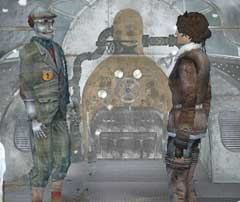
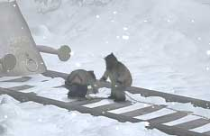
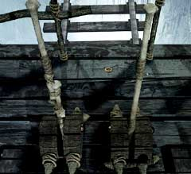

|
心を開いて!
ハンスの夢の世界からもどったあなたは、旅を続けるための準備をしなければならない。ハンスの容態が気にかかるかもしれないが、準備をしなければならないのだ。・ユコール族の人が機関車に近づかない理由を調べる ・機関車を村の中まで移動させる ・オスカーにあることを質問する ということをやらなければならない。

・村人が機関車に近寄らないのには、理由がある。 ・線路がある村で、機関車が異質なものとは考えにくい。 ・それでは、その理由とは何か?

・村人が機関車に近づき、あなたに協力してくれれば機関車を動かすことができる。 ・理由が分かれば、あとは対処法を探すだけでよい。 ・機関車にフックを引っかけてもらっただけでは、機関車を動かすことはできない。 ・まだやることがあるのだ。

・機関車が動かない理由は何だろうか? ・この巻き取り装置に異常があるのだろうか? ・それとも、機関車をつなぐロープやフックに問題があるのだろうか? ・機関車を移動し終わったあなたは、オスカーに質問をしなくてはならない。 ・その質問は、夢の世界でハンスが残した奇妙な言葉の意味である。
| 次へ >> |
|